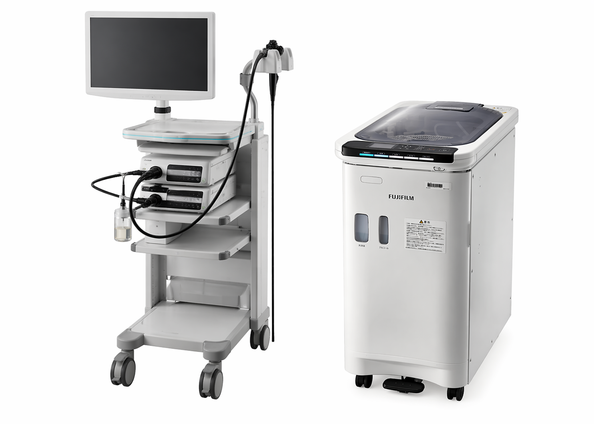
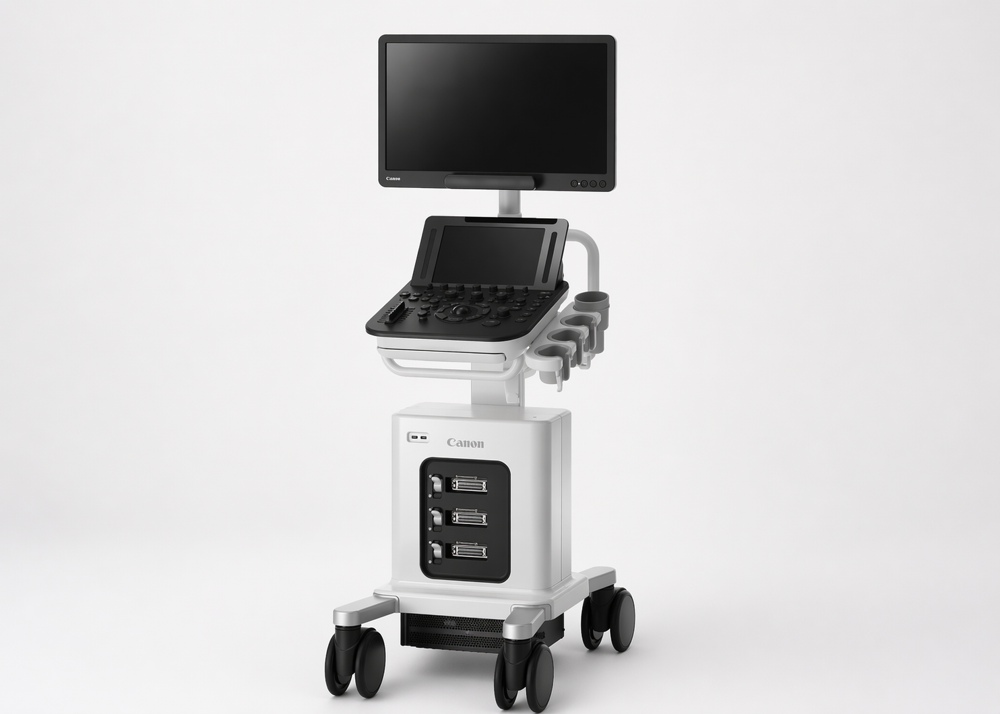
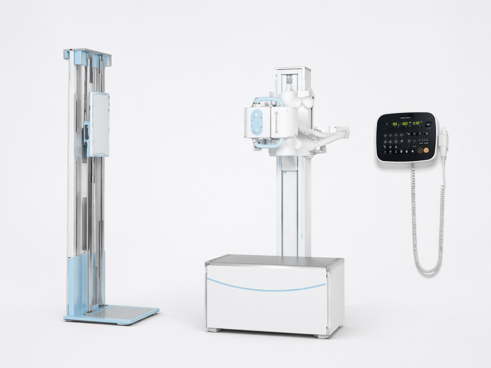
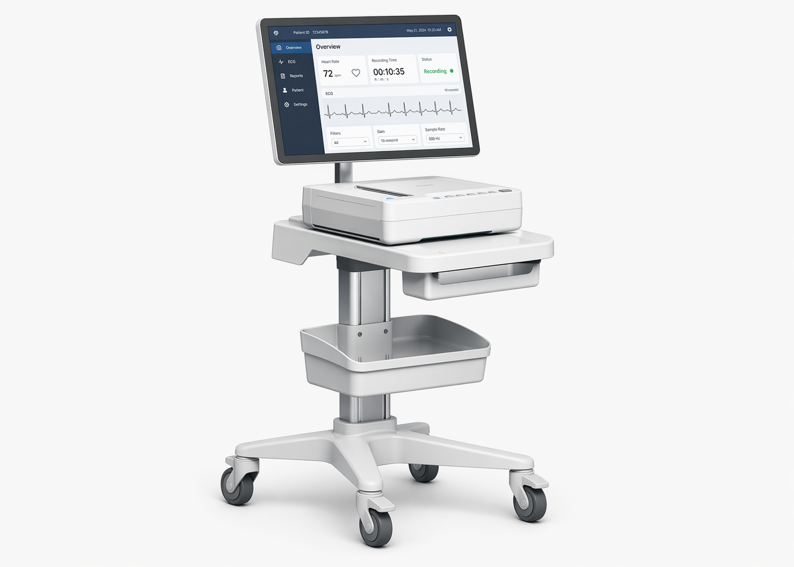
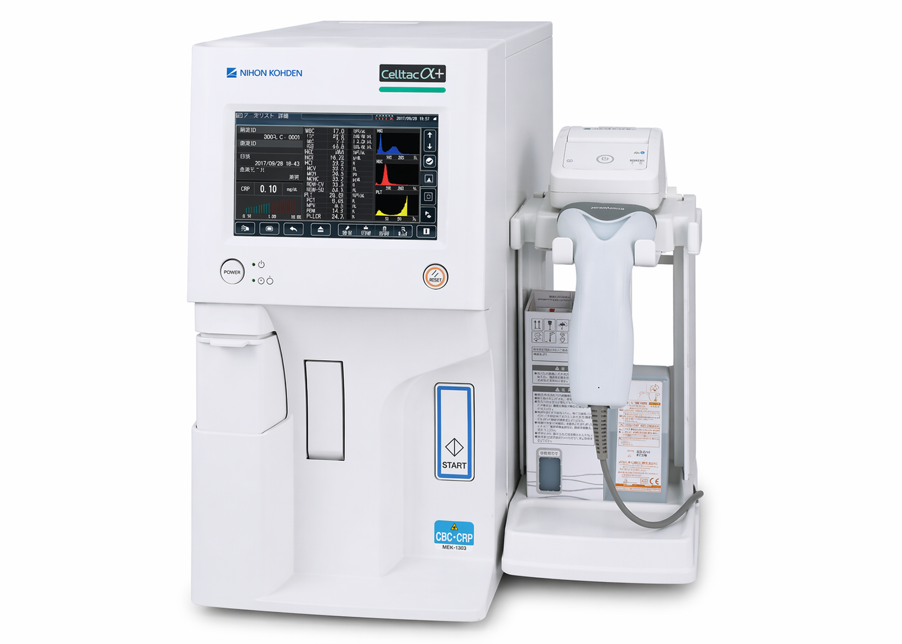

みどり内科・消化器内科クリニックは、患者様に安心して受診いただけるよう、清潔で快適な院内環境を整えております。最新の医療設備を導入し、正確な診断と質の高い医療の提供に努めています。バリアフリー設計で、ご高齢の方や車椅子の方にも安心してお越しいただけます。


 受付・待合室
受付・待合室
 診察室
診察室
 廊下・通路
廊下・通路

最新の高精細内視鏡で微小な病変も発見

腹部臓器をリアルタイムで観察

低被ばくで鮮明な画像を撮影

不整脈や心疾患のスクリーニングに使用

血液検査の迅速な分析が可能
| 住所 | 〒107-0062 東京都港区南青山1-2-3 メディカルビル3F |
|---|---|
| 電話 | 03-0000-0000 |
| 最寄駅 | 東京メトロ 青山一丁目駅 徒歩3分 |
| 駐車場 | 提携駐車場あり（2時間まで無料） |
青山一丁目交差点を南へ進み、コンビニエンスストアの隣のメディカルビル3階です。1階に薬局がございます。
| 月 | 火 | 水 | 木 | 金 | 土 | |
|---|---|---|---|---|---|---|
| 午前9:00〜12:30 | ● | ● | ● | ● | ● | ● |
| 午後14:00〜18:00 | ● | ● | − | ● | ● | − |
受付は診療終了30分前まで
休診日：水曜午後・土曜午後・日曜・祝日